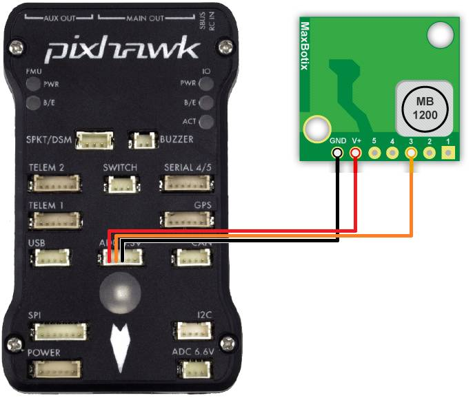

Maxbotix Analog Sonar¶
XL-Maxbotix-EZ line of analog sonars (XL-MaxSonar-EZ0, EZ4 and EZL0) are relatively inexpensive, short range (7m to 10m) range finder primarily designed for indoor use but which has been successfully used outdoors on Copter and Rover. These are the predecessors to I2C sonar.
The EZ4 (recommended) has the narrowest beam providing the best noise resistance while the EZ0 has the widest beam and higher sensitivity. The long range EZL0 has the same sensitivity as the EZ0 but a 10m range (as opposed to 7m).
Connecting to the Pixhawk¶
The sonar should be connected to the Pixhawk’s ADC 3.3V port as shown below. The Pixhawk will provide the regulated 5V power supply the sonar requires.
{kind=link}
Setup through the mission planner¶
please first connect with the Mission Planner and then open the Config/Tuning >> Full Parameter List page and set the following parameters (example shown if first rangefinder:
RNGFND1_PIN = “14” for Pixhawk’s ADC 3.3v pin #2
RNGFND1_MAX_CM = “700” (i.e. 7m max range) if using EZ0 or EZ4, “1000” if using EZL0
RNGFND1_SCALING = “2.04” (i.e. 7m / 5v) if using EZ0 or EZ4, “4.08” (i.e. 10m / 5v) if using EZL0
RNGFND1_TYPE = “1” (Analog)
Note
The Maxbotix analogue rangefinders according to their data sheets output Vcc/1024 volts per centimetre, or 0.488 v/m when supplied with 5v (which the ADC 3.3v port supplies), which translates into 2.04meters per volt. The range is 7.6m according to the datasheet, but analog output is limited to 7m. As we can only read up to 3.3v then that means 6.75m is the furthest it can really measure.
{kind=link}
Testing the sensor¶
Distances read by the sensor can be seen in the Mission Planner’s Flight Data screen’s Status tab. Look closely for “sonarrange”.